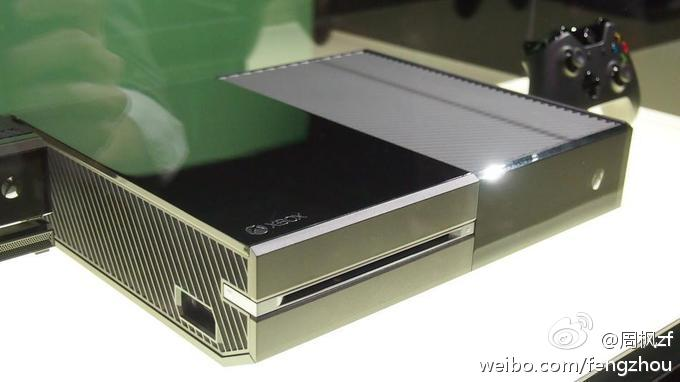

网页链接 找到了TIME这篇文章。8岁初潮在美国看上去是稀松平常 //@王风风风: 另外我觉得主要还是激素，也就是肉禽蛋海鲜。根本防不住，除非有钱全吃欧洲进口有机食品。请白富美医师@姗姗Fwu 和生化小天后@vc2270 指正。//@王也strikes: 这排版，看着太费劲了.. //@宋大妞儿:给孩子喂---:该账号因被投诉违反《微博社区公约》的相关规定，现已无法查看。查看帮助 网页链接
大企业都一直想占领客厅这个市场，无论是Apple TV还是Google TV。xBox算是微软在这个领域多年苦行经营的优势了。//@王风风风: 嗯，现在可以消磨时间的东西太多，铁杆玩家的精力也不足了。。这个没//@周枫zf: 面向家庭搞这个做成了就成功转型升级了，但hard-core游戏下降是事实，所以转型时间不多。@周枫zf:Xbox One新版Kinect的技术真心不错，但竞争对手不是PS4，而是手机和平板，用户都跑那里玩游戏去了，电视游戏不是能让猪飞起来的风口了。网页链接 